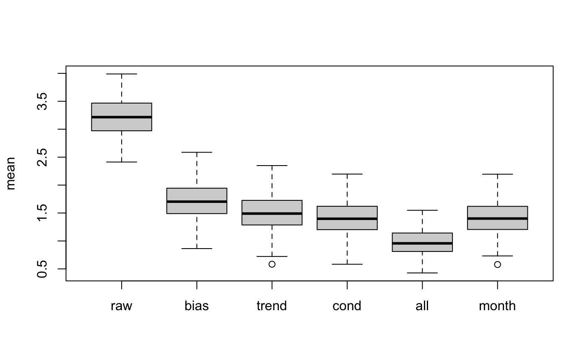

Compute calibration for biases that follow various linear models in dependence of lead time, forecast anomalies and initialization / forecast time.
linmod(fcst, obs, fcst.out = fcst, fc.time = NULL, fcout.time = NULL, formula = obs ~ fcst, recal = FALSE, smooth = nrow(fcst) > 1, smoothobs = nrow(fcst) > 1, span = min(1, 91/nrow(fcst)), bleach = nrow(fcst) > 1, differences = FALSE, type = c("calibration", "prediction"), ...)
| fcst | n x m x k array of n lead times, m forecasts, of k ensemble members |
|---|---|
| obs | n x m matrix of veryfing observations |
| fcst.out | array of forecast values to which bias correction should be
applied (defaults to |
| fc.time | forecast times as R-dates for trend aggregation |
| fcout.time | forecast time for array to which bias correction is applied
for back compatibility with leave-one-out cross-validation in
|
| formula | model formula to model deviations from the climatology (see details) |
| recal | logical, should the ensemble spread be recalibrated? (see details) |
| smooth | logical, should model climatology (and ensemble spread) be smoothed? |
| smoothobs | logical, should observation climatology (and residual standard deviation) be smoothed? |
| span | the parameter which controls the degree of smoothing (see
|
| bleach | logical, should variance of the residuals be controlled for (see details)? |
| differences | logical, should model be fit on first order differences (see details)? |
| type | one of |
| ... | additional arguments for compatibility with other calibration methods |
This is the workhorse for calibration methods that can be expressed as linear models. The systematic model errors are decomposed into a seasonally varying (and thus lead-time dependent) bias and ensemble mean errors that depend on forecast anomalies from the mean forecast, on lead time, and/or on forecast date.
A variety of linear models for calibration can be specified using
R's formula notation and a few examples are given below (see
also example(linmod)).
obs ~ offset(fcst) - 1Simple bias correction with seasonally varying mean bias
obs ~ fcstModel error dependent on forecast (with dependence being constant across lead times)
obs ~ fcst + fcst:poly(lead,3)Model error dependent on forecast with dependence varying across lead times
obs ~
offset(fcst) + yearLinear time trend in bias (time trend constant across lead times)
obs ~ offset(fcst) +
year*as.factor(format(date, "%m"))Linear time trend in bias with trend depending on forecast month
In addition to complex dependence of the systematic ensemble mean errors on
forecast, lead-time, and forecast dates, linmod also allows a
recalibration of the ensemble spread. If recal = TRUE, the lead time
dependent ensemble spread is inflated (shrunk) to reflect the lead time
dependent standard deviation of the observation residuals. In addition, if
type = 'prediction', the ensemble spread matches the predictive
standard deviation for the out-of-sample forecast. That is, for a simple
linear model with \(y = ax + b + \varepsilon\), the
predictive standard error is \(\sigma \sqrt{1 + 1/n + {x_0}^2 /
\sum{x_j^2}}\), where \(n\) is the
number of forecasts in the calibration set, \(x_0\) is the ensemble
mean of the foracst that is to be bias-corrected, and \(x_j\) are the
forecast ensemble means in the calibration set.
The underlying assumption of iid residuals in the linear model is
generally not fullfilled, thus weighted least squares can be used instead
with bleach = TRUE. The weighting is chosen proportional to the
inverse of the lead-time dependent variance of the residuals.
By default, the seasonally varying bias and the residual errors and model
spread are smoothed using a loess smoothing. Smoothing of the model
ensemble mean and model spread can be switched of with smooth =
FALSE, smoothing of the observation climatology and residual standard
deviation can be switched of with smoothobs = FALSE
Both the residual standard deviation (psd) and the ensemble spread
(fsd) are smoothed using loess as follows.
psd.smooth = exp(loess(log(psd) ~ log(seq(along=psd)),
span=span)$fit)
Alternatively, the model parameters can be estimated on time series after
taking first-order differences (but preserving the forecast signal) to
reduce the effect of auto-correlation in the residuals with
differences = TRUE.
The linear models are fit using maximum likelihood assuming iid
residuals which will generally not apply for real forecasts
(auto-correlation and heteroscedasticity).
seasonal <- sin(seq(0,4,length=215)) signal <- outer(seasonal, rnorm(30), '+') fcst <- array(rnorm(215*30*51), c(215,30, 15)) + 2*c(signal) obs <- array(rnorm(215*30, mean=outer(seasonal, seq(1,3,length=30), '+')), c(215, 30)) + signal fc.time <- outer(1:215, 1981:2010, function(x,y) as.Date(paste0(y, '-11-01')) - 1 + x) fdeb <- list() fdeb$raw <- fcst[,21:30,] ## explore calibration with varying complexity fdeb$bias <- biascorrection:::linmod(fcst[,1:20,], obs[,1:20], fcst.out=fcst[,21:30,], fc.time=fc.time[,1:20], fcout.time=fc.time[,21:30], formula=obs ~ offset(fcst)) fdeb$trend <- biascorrection:::linmod(fcst[,1:20,], obs[,1:20], fcst.out=fcst[,21:30,], fc.time=fc.time[,1:20], fcout.time=fc.time[,21:30], formula=obs ~ offset(fcst) + year + year:poly(lead,3)) fdeb$cond <- biascorrection:::linmod(fcst[,1:20,], obs[,1:20], fcst.out=fcst[,21:30,], fc.time=fc.time[,1:20], fcout.time=fc.time[,21:30], formula=obs ~ fcst + fcst:poly(lead,3)) fdeb$all <- biascorrection:::linmod(fcst[,1:20,], obs[,1:20], fcst.out=fcst[,21:30,], fc.time=fc.time[,1:20], fcout.time=fc.time[,21:30], formula=obs ~ fcst + fcst:poly(lead,3) + year + year:poly(lead,3)) fdeb$month <- biascorrection:::linmod(fcst[,1:20,], obs[,1:20], fcst.out=fcst[,21:30,], fc.time=fc.time[,1:20], fcout.time=fc.time[,21:30], formula=obs ~ fcst*as.factor(format(date, '%m'))) fdeb.rmse <- lapply(fdeb, function(x) sqrt(apply((rowMeans(x,dims=2) - obs[,21:30])**2, 1, mean))) boxplot(fdeb.rmse, ylab='RMSE of the ensemble mean')